Behavioral research and digital therapeutic design for patients with severely uncontrolled diabetes.
Johnson & Johnson wanted to improve treatment adherence among patients whose diabetes was severely out of control.
1. Patients understand their blood glucose readings. The challenge was their clinical guidance offered no support at specific moments and contexts of daily life.
2. Treatment plans were not tailored to the contexts in patients' individual lives, so there was a gap between what was prescribed and what patients could do.
I led a multidisciplinary team of experts (designers, UX research, behavioral science, diabetes nursing, AI engineering) to capture what life with type 2 diabetes actually looks like for the most vulnerable patients. We began with a behavioral analysis through secondary clinical research and an analysis of available data sources and J&J's AI capabilities.
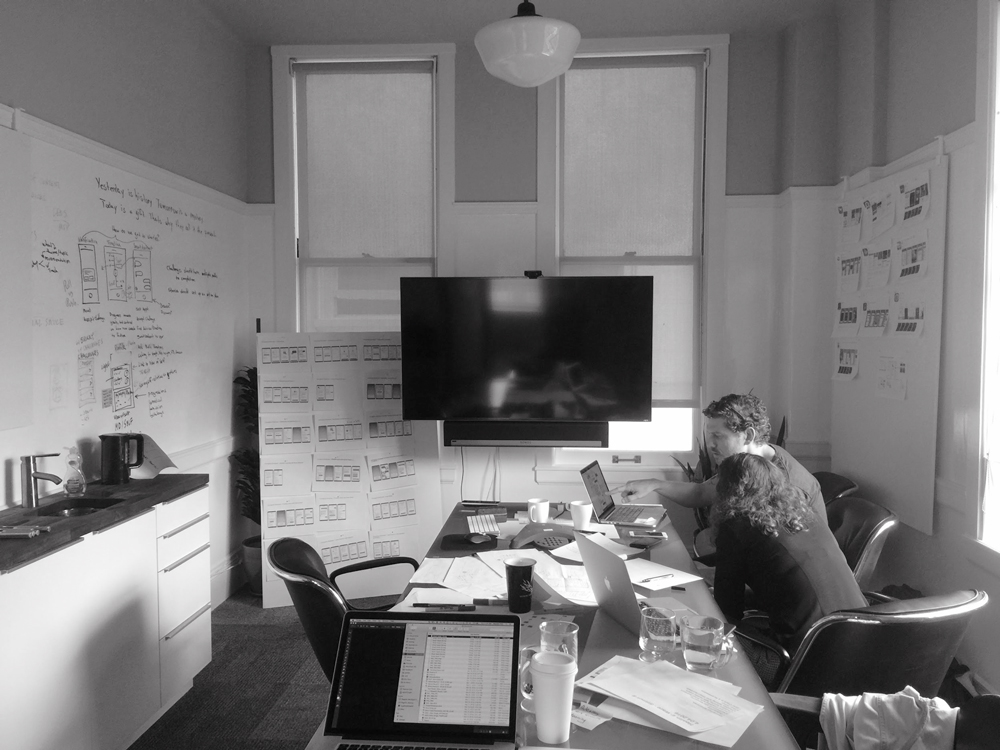
We learned two key things by diving into the clinical literature and interviewing endocrinology and behavior-change SMEs:
1. Results would be most visible for people with uncontrolled diabetes (HbA1c over 8%)
2. Self-management tools didn't account for behaviors determined by daily context and personal circumstances.
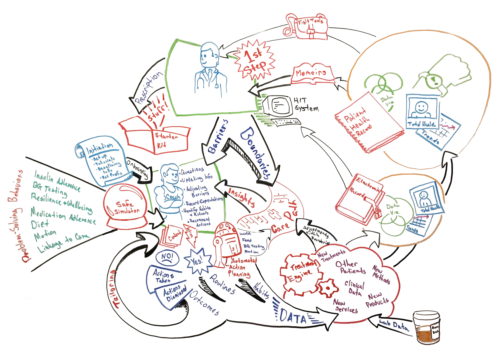
Over three months, the team observed and interviewed people with uncontrolled diabetes across New York, Atlanta, and Los Angeles. Our subject matter experts helped us understand how to see the gap between clinical guidance and real behavior, which informed our testing criteria.
What we found confirmed the team's starting hypothesis that patients actually do understand their glucometer readings, but were struggling to respond to them due to life circumstances.
Their treatment plans were not fine-tuned to account for non-clinical variables like unpredictable schedules, social pressures, moments of stress, or lacking basic services or infrastructure. The most challenging moments are between quarterly visits when clinical guidance isn’t fresh in their minds and they may have become overwhelmed by the burdens of life.
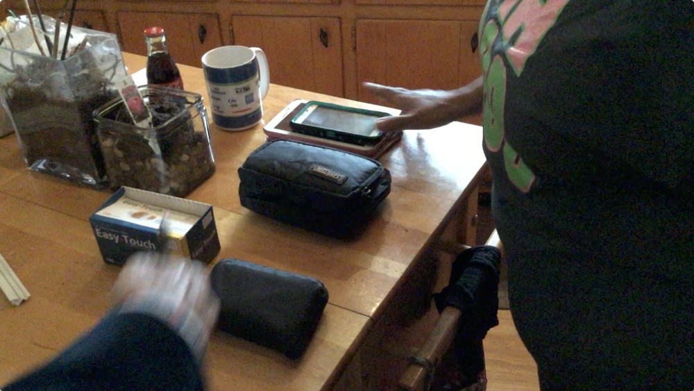
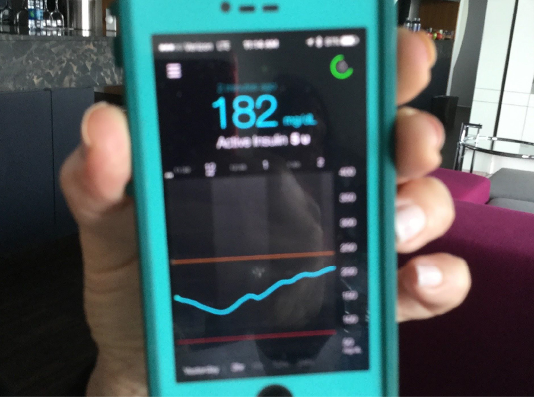
We then held co-creation workshops with patients, doctors, and nurses to pressure-test our hypotheses and craft the characteristics of a meaningful intervention: the ideal experience would be a personal chef, a resident nurse, a personal trainer, and a life coach following each patient through their day.
That framing became the design brief. Now we had to identify the specific moments where a well-timed, contextually appropriate nudge could substitute for human intervention and work out a delivery mechanism.
The workshops gave us a clear model of where patients were struggling and why, which determined which of J&J's patented behavioral science interventions best translated into a digital channel without losing their therapeutic effectiveness.
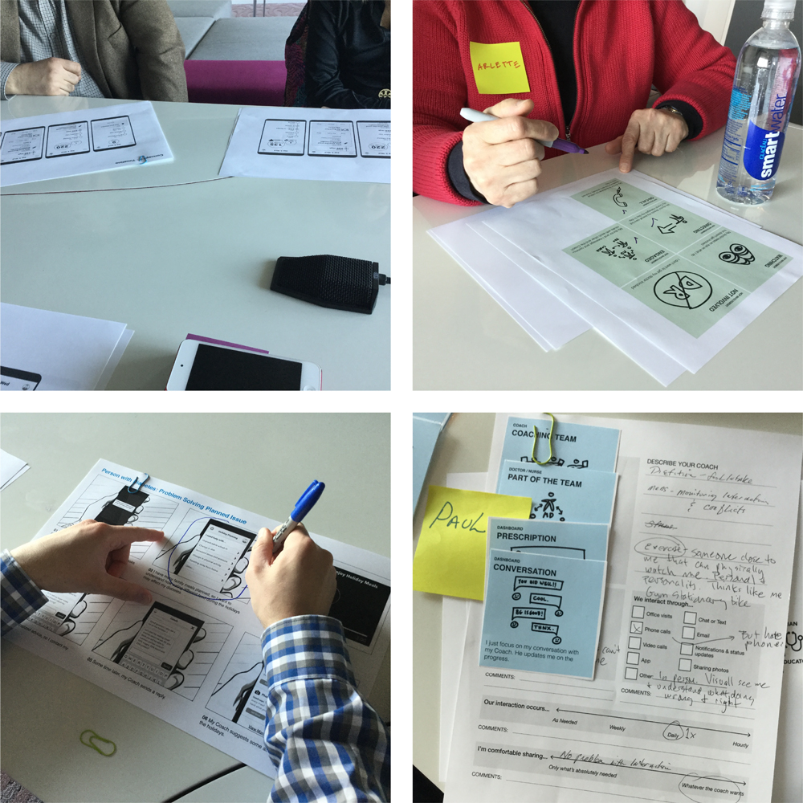
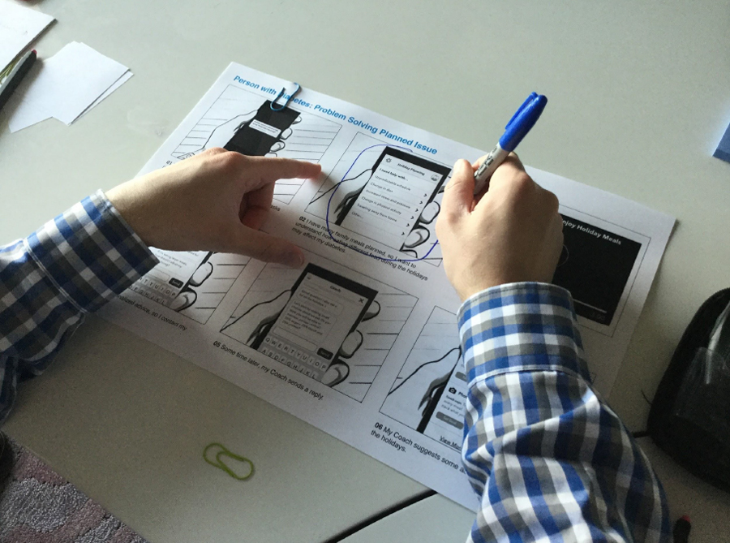
I then directed the work of translating a clinical intervention plan primarily built on problem-solving and action-planning frameworks into a digital experience.
We established which data sources would produce the most meaningful picture of a patient's current situation, how to turn the interventions into a UX that would have the greatest impact on incremental behavior change, and how an AI layer would provide clinically-supervised responses approved by the patient’s care team.
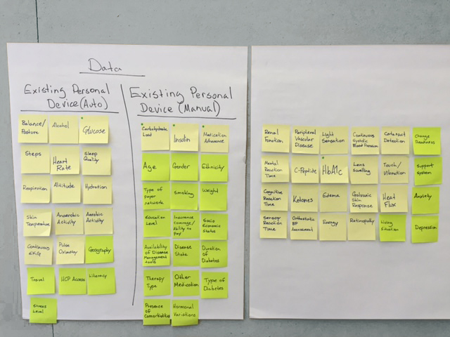
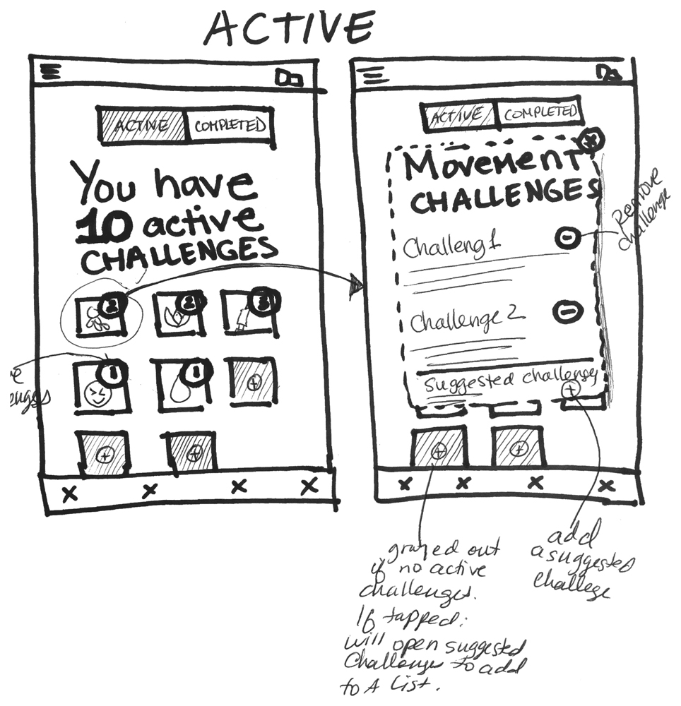
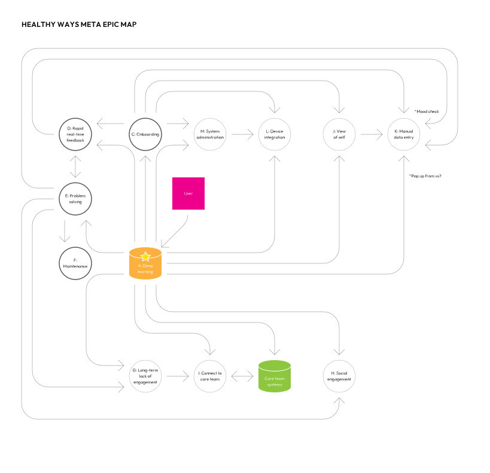
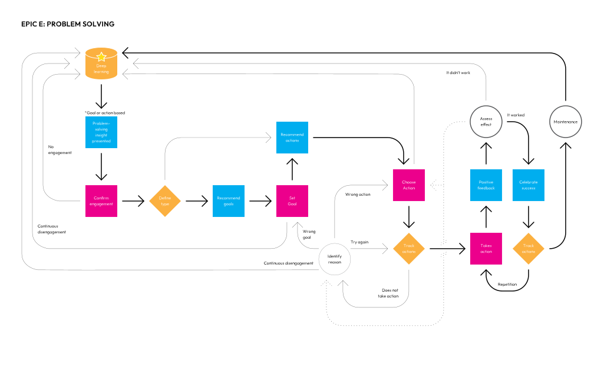
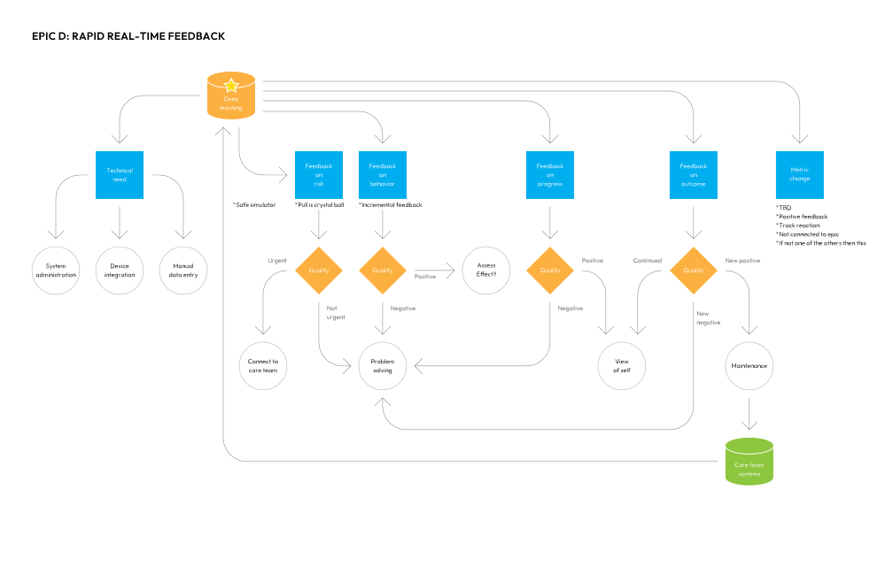
At the end of the process, I worked with the clinicians to translate J&J's behavioral science methodology into a service logic where the intervention was driven by what a patient was actually experiencing that day.
J&J Technology then developed a machine learning model and developed an alpha-stage app based on our work.
We validated the pilot prototype with a new group of patients, then developed a comprehensive content strategy using J&J's existing content inventory.

Synthesis: How can we help people manage uncontrolled diabetes?
Insights1. We think of treatment failure as a knowledge problem, but for patients with severely uncontrolled diabetes, it is almost always a behavioral and contextual one.
2. We assume tools improve adherence if they are simple, but ease of use doesn't address the specific moments that put pressure on patients.
3. We expect quarterly doctor visits to provide sufficient guidance, but challenges between visits need immediate attention.
4. We think focus groups reveal patient behavior, but they only reflect patients' interpretations of their own behavior, not the reasons those behaviors come about.
5. We think struggling patients lack discipline, but variables in a patient's life have the biggest impact on adherence.
6. We think having a patient’s data guarantees effective analysis, but the highest-value application of health data is tailored, moment-specific behavioral support.
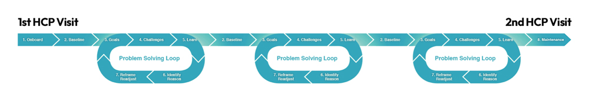
Executive communication of the experience between visitsA. Provide interventions around the specific moments of daily life where patients are most likely to fail.
B. Translate J&J's behavioral science frameworks into a digital conversation that feels empathetic and situationally aware rather than clinical and prescriptive.
C. Reformat clinical guidance into a coaching program that eases burden, teaches life skills, and builds resilience.
Research methods